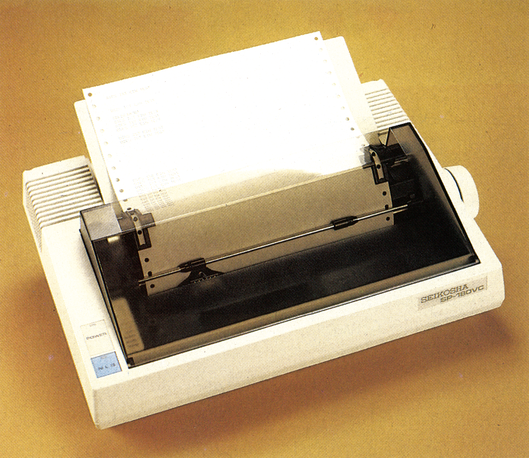
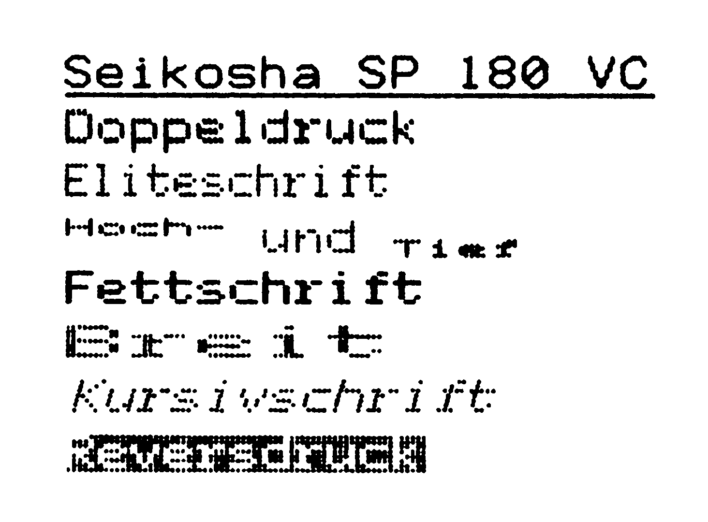
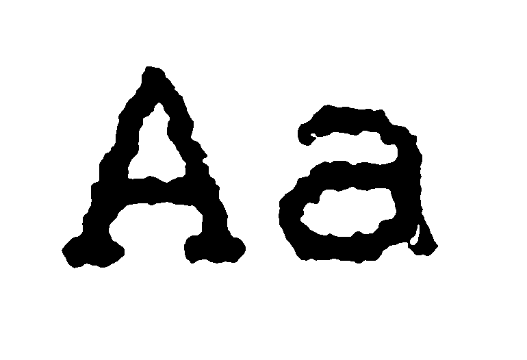

SP 180 VC — das Preiswunder
So preiswert konnte man noch nie einen Drucker mit NLO-Schönschrift erhalten — der SP 180 VC gefällt aber nicht nur durch seinen niedrigen Preis. Lassen Sie sich verzaubern von diesem liebenswerten Drucker.
Wer die Entwicklung der Seikosha-Drucker beobachtet hat, wird sich sicherlich gefragt haben, wann denn nach GP 100 VC und GP 500 VC endlich wieder ein sehr preiswerter Drucker, der direkt an den C 64 oder C 128 anschließbar ist, erhältlich sein wird. Nun, ein knappes halbes Jahr nachdem wir auf der CeBIT in Hannover das erste vielversprechende noch handgefertigte Muster des SP 180 VC begutachten konnten (siehe CeBIT-Nachlese Ausgabe 6/86), war es endlich soweit, und eines der ersten deutschen Exemplare stand uns in der Redaktion zum Test zur Verfügung (Bild 1). Besonders gespannt waren wir natürlich auf die in dieser Preisklasse noch nie dagewesene Schönschrift (NLQ-Schrift), dennzum Preis von 598Mark konnte man bislang in den seltensten Fällen mehr als Fettdruck erwarten; doch dazu später mehr. Zunächst freutmansichaberüber den problemlosen Anschluß des Druckers an den seriellen Bus des © 64 mit einem einfachen beiliegenden Kabel. Gelungenes Design Dabei fällt der SP 180 VC auch dadurch angenehm auf, daß der serielle Bus am Drucker doppelt vorhanden ist und somit die Möglichkeit zum Anschluß weiterer Geräte offenbleibt.

Den SP 180 VC kann man nicht nur als schönen, sondern auch als ergonomisch durchdachten Drucker bezeichnen. Sowohl das Einlegen des Papiers in den leider als Zugtraktor gebauten Papierantrieb als auch das Einlegen der Farbbandkassette lassen sich relativ einfach und ohne technisches Studium bewerkstelligen. Erfreulich ist auch der große, wirklich handgerechte Drehknopf für das Papier. Den braucht man allerdings auch recht häufig, denn der SP 180 VC besitzt weder eine Zeilen- noch eine Seitenvorschubtaste. Die einzige auf der Gehäusevorderseite zur Verfügung stehende Taste dient der manuellen Einschaltung der NLQ-Schönschrift. Die abnehmbare Platte zur Führung des bedruckten Papiers ist dafür in dieser Preisklasse wohl einmalig. Auch bei der Plazierung der DIL-Schalter hat man bei Seikosha an den mit Schraubenzieher und Brechstange weniger geübten Computer-Freund gedacht, denn diese Schalter sind leicht erreichbar auf der Geräterückseite angebracht.
Leicht bedienbar
Hier kann man die Geräteadresse, die Seitenlänge, die Betriebsart und den Zeichensatz einstellen. Damit ist auch schon angedeutet, nach welchem Prinzip der SP 180 VC arbeitet. Zum einen soll er nämlich einen Commodore-Drucker mit allen Commodore-spezifischen Befehlen wie Sekundäradresse, Reversschrift und CBM-Zeichensatz realisieren. Zum anderen werden diese Befehle durch einige weitergehende Funktionen und eine zweite Betriebsart, den ASCII-Modus, bereichert. Doch sehen wir uns zunächst die Commodore-Betriebsart an. In diesem Modus emuliert der SP 180 VC einen MPS 801-Drucker, der allerdings um die wesentlich schönere Schriftqualität bereichert wurde. Dazu stehen folgende Sekundäradressen zur Verfügung: »3« zum Festlegen der Seitenlänge, »6« zum Bestimmen des Zeilenabstandes, »Z« für die Groß-/Kleinschrift, »10« für die Druckerinitialisierung und »1%, um Schmalschrift einzuschalten. Zusätzlich kann man aber auch verschiedene Formatierungsbefehle (rechter und linker Rand, Zeilenabstand), Schrifteinstellungen (unterstreichen, breit, kursiv, fett, schmal, NLQ, Sub-/Superscript) und einige allgemeine Befehle wie beispielsweise das Überspringen der Perforation einstellen. Abgesehen von den speziellen
Commodore-Steuerbefehlen, die mit einem einzigen CHR$-Wert aufgerufen werden können (Reversdruck) hält sich die Syntax der Befehle an die bewährte ESC-Form (Tabelle). Schaltet man den Drucker aber in den ASCII-Modus, so bekommen einige dieser Steuerbefehle eine andere Bedeutung, die sich glücklicherweise an die ESC/P-Norm hält. So wird aus dem CHR$(B5) für die doppelte Breite im ASCII-Modus der Befehl zum Einschalten der Schmalschrift. In dem 70seitigen deutschen Handbuch wird auf diese Besonderheiten, aber auch auf die Wünsche des Commodore-Besitzerss, eingegangen. So beziehen sich erfreulicherweise alle Beispiele auf den C 64 und auch die Beispiele sind im Commodore Basic V 2.0 abgefaßt.
| Name des Druckers: | Seikosha SP 180 VC | Empfohlener Preis: | 598 Mark |
|---|---|---|---|
| Abmessungen (B x H x T): | 407 x 117 x 300 | Gewicht: | 4,2 Kilogramm |
| Papierformate: | Einzel, endlos, max. 240 mm breit | Durchschläge: | bis zu 2 |
| Zeichen/Zeile: | bis zu 132 | Selbsttest: | Ja |
| Pufferspeicher: | — | Rückwärtstransport: | Nein |
| Geschwindigkeit: | — | Probetext: | 3:20 Minuten |
| Normal angegeben: | 100 Zeichen/Sekunde | Praxistest: | 74 Zeichen/Sekunde |
| NLQ angegeben: | 16 Zeichen/Sekunde | NLQ-Praxistest: | 16 Zeichen/Sekunde |
| Grafikmodi: | 480 Punkte pro Zeile | Farbband: | 24,50 Mark |
| Ladb. Zeichensatz: | Nein | Unterstreichen: | Ja |
| Hexdump: | Nein | Autom. Einzelblatt: | Nein |
| Funktionstasten: | NLQ-Schalter | ||
| Ausstattung: | Traktor, deutsches Handbuch, Papierseparator | ||
| Schriftarten: | Doppelt, Fett, Revers, Elite, Unterstrichen, hoch- und tiefgestellt, Kursivschrift, Breitschrift | ||
| Sonderzubehör: | — | ||
Commodore-Grafik
Wer gerne mit Grafikprogrammen arbeitet, weiß, wie wichtig die Grafikfähigkeit des Druckers ist. Zwar wäre es bei einem Drucker in dieser Preisklasse etwas zuviel verlangt, die Grafikfähigkeiten eines MP 1300 Al zu erwarten, dafür beherrscht der SP 180 VC aber die Grafik des MPS 801. Alle Programme, also auch professionelle Grafikhilfen ° wie Print Shop, Simons Basic, Hi-Eddi und Supergrafik funktionieren mit dem SP 180 VC so wie mit einem MPS 801, also mit einer Grafikauflösung von 480 Punkten in der Horizontalen. Ein weiterer Schwerpunkt liegt neben der Verwendung mit Grafikprogrammen im Ausdruck von Texten mit einem Textprogramm. Hier zeigen sich die Qualtitäten der NLQ-Schönschrift (Bilder 2 und 3), die für diese Preisklasse geradezu sensationell ist. Obwohl die Beurteilung einer NLO-Schrift immer etwas subjektiv ist, so kommt die Schrift des SP 180 VC doch beinahe an die unseres Referenzdruckers Citizen 120 D heran, der sich lediglich durch ein etwas harmonischeres Schriftbild hervorhebt. Zum Schreiben von Briefen ist die Schrift des SP 180 VC aber in jedem Fall geeignet. Um so interessanter ist es, das Zusammenspiel mit verschiedenen Textprogrammen zu testen. Hier traten im Test keine Schwierigkeiten auf, denn der SP 180 VC besitzt insgesamt fünf Zeichensätze, unter anderem auch Zeichensätze mit deutschen Umlauten. Die Belegung der ASCII-Werte für die Umlaute orientiert sich dabei zum einen an der ASCII--Norm und zum anderen am DIN-Zeichensatz des C 128. Wer den SP 180 VC an seinen C 128 anschließt und die DIN-Taste drückt, bekommt genau die Zeichen auf dem Drucker ausgegeben, die er auf dem Bildschirm sieht und zwar inklusive Grafik- und Sonderzeichen. Daß man dabei schon etwas Geduld aufbringen sollte, ist bei einem Drucker mit angegebenen 100 Zeichen pro Sekunde (gemessen 74 Zeichen pro Sekunde) in Normalschrift und angegebenen 16 Zeichen pro Sekunde in NLQ-Schrift (gemessen 16 Zeichen pro Sekunde) durchaus normal.


Viel Drucker für wenig Geld
Mit dem SP 180 VC erhält man, gemessen am Preis, ausgeprochen viel Druckleistung. Abgesehen von den gelegentlich doch etwas fehlenden Tasten für den Papiervorschub hat der SP 180 VC im Test gefallen. Selbstverständlich kann man den SP 180 VC nicht mit einem Drucker für 2000 Mark vergleichen, aber verglichen mit unserem Referenzdrucker dieser Preisklasse machte der SP 180 VC durchweg eine gute Figur. Besonders hervorzuheben ist der bislang selten zu findende Zeichensatz des C 128 im DIN-Modus. Wie es Seikosha gelungen ist, so viel Drucker für so wenig Geld anbieten zu können, bleibt wohl immer ein Geheimnis der Marketing-Strategen — der Kunde aber kann sich freuen, denn der SP 180 VC ist eine runde Leistung mit wenig Haken..
(aw)Info: Microscan, Überseering 31, Postfach 601705